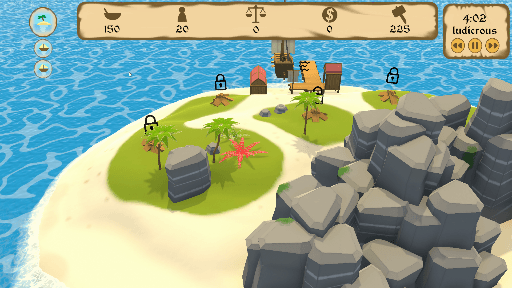
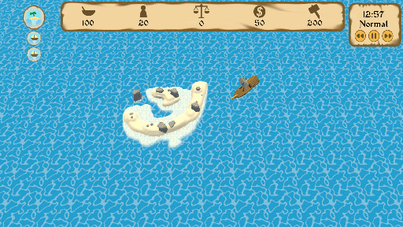

My role: Programmer.
My contribution:
- EventSystem
- Economy
- Site Interaction
- ToolTip
- Diplomacy
- TimeScaleing
On this page I'll explain how the following Systems work:
EventSystem
The Event system which uses a combination of several event related systems to make event pop ups with a variety of effects.
Economy
The system using GameTicks to consume resources over time using the CivManager and the GameManager.
Site Interaction & Diplomacy
The system used to interact with islands and loot sites both in diplomacy and raiding.
NoMansBoat is a civilization management game set in a large islands filled sea. The focus of the game lies on keeping your civilization alive.
This is mainly done by using trade and other interactions with surrounding islands and loot sites. The game plays in a top down view both on the players island and the world map.
Besides trade you can also pillage both inhabited and uninhabited islands or build buildings on your island.
This helps in the short term to relieve the players deficits but it won’t help the players civilization through the late game.
The biggest problem the player will have is going to be the large influx of people arriving at their island.
This causes an ever increasing need for food.
Another factor which affects both the game and the players actions are events.
These events can either give, take or both take and give at the same time.
They mainly give or take resources, but you can also lose or gain stability to them.
Some events also have special effects like ending the game.
The goal of the game is to survive through the main event chain without being banished by your people.

The EventSystem uses The EventManager, ScriptableEvents,EventChain and the SpecialEvents script.
The system Starts by creating an Event template.
These templates are scriptable objects derived from the ScriptableEvents class.
In these events you can add the main flavor text, the amount of options/buttons you want, the effects of every option and the flavor text for the different option buttons.
Once created, a scriptable event can be assigned to The EventManager.
[CreateAssetMenu(fileName = "Event", menuName = "Event/ScriptableEvent", order = 1)]
public class ScriptableEvent : ScriptableObject
{
public List<EventOptions> eventOptions = new List<EventOptions>();
[Tooltip("Event titel text")]
public string Title;
[Tooltip("Event message text")]
[Multiline]
public string Message;
}
[System.Serializable]
public class EventOptions
{
[Tooltip("Text which will be shown on the button")]
public string buttonText;
[Tooltip("Keep it on 0 if you dont want to trigger a SpecialEventFunction")]
public int specialEvent;
public List<EventOptionsEffects> eventOptionsEffects = new List<EventOptionsEffects>();
}
[System.Serializable]
public class EventOptionsEffects
{
//This class contains all the effects an Events options performs
[Tooltip("Type of resource changed by event")]
public CivManager.Type resoureType;
[Tooltip("Value changed by event")]
public int Value;
}
The EventManager uses the assigned events through the TriggerRandomEvent function. This function is subscribed to a delegate which gets triggered every in game day. The function itself uses an if statement with a randomized value to decide if an event actually gets triggered or not. The EventManager can instead of a normal event also trigger the next step of an event chain. This will pop up as any normal event but will later pop up again with the next part of the story/chain.
By hovering over one of the events option buttons a popup window will appear with information about the effects of clicking the button. This window will follow the mouse cursor as long as the cursor is above a button. If the player clicks the button the shown effects will be triggered. These effects can remove or add resources and stability. The effects of an event button can also trigger a function. This is simply done using a integer value on a switch case. This switch has several cases which all trigger their related function.
public void TriggerEventRelatedFunctions()
{
ProgressEventChain();
TriggerRandomEvent();
}
public void TriggerRandomEvent()
{
if (activeEvent == null)
{
// Using the Chance int combined with the if statement gives the random event a chance to trigger instead of a guarantee
int Chance = Random.Range(1,11);
if (Chance > 5)
{
int eventIndex = Random.Range(0,randomEventsList.Count);
SetEvent(randomEventsList[eventIndex]);
}
}
}
public void SetEvent(ScriptableEvent curentEvent)
{
if (activeEvent == null)
{
TimeManager.instance.PauseGameSpeed();
activeEvent = curentEvent;
//Setup pannel
eventPannel.SetActive(true);
eventText.text = curentEvent.Message;
eventTitle.text = curentEvent.Title;
//Create buttons
for (int i = 0; i < curentEvent.eventOptions.Count; i++)
{
int t;
GameObject newButton = Instantiate(button, buttonLocation.localPosition, Quaternion.identity, parent: buttonLocation);
//newButton.transform.SetParent(buttonLocation);
// newButton.transform.localScale = Vector3.one;
newButton.GetComponentInChildren<TMP_Text>().text = curentEvent.eventOptions[i].buttonText;
if(curentEvent.eventOptions.Count != 0)
{
List<string> effectText = new List<string>();
foreach (EventOptionsEffects effect in curentEvent.eventOptions[i].eventOptionsEffects)
{
effectText.Add(effect.resoureType.ToString() + " " + effect.Value.ToString() + ". \n");
}
string formatedText = "";
foreach (string text in effectText)
{
formatedText += text;
}
newButton.GetComponentInChildren<ToolTipPopup>().toolTipString = formatedText;
}
if(curentEvent.eventOptions[i].specialEvent != 0)
{
newButton.GetComponentInChildren<ToolTipPopup>().toolTipString = "This will activate a special event";
}
t = i;
newButton.GetComponent<Button>().onClick.AddListener(() => {ResolveEvent(t,curentEvent);});
}
}
}
public void ResolveEvent(int optionInt, ScriptableEvent curentEvent)
{
EventOptions option = curentEvent.eventOptions[optionInt];
for (int i = 0; i < option.eventOptionsEffects.Count; i++)
{
EventOptionsEffects effects = option.eventOptionsEffects[i];
if (effects.Value > 0)
{
CivManager.instance.AddIncome(effects.Value,effects.resoureType);
}
else
{
CivManager.instance.RemoveIncome(effects.Value,effects.resoureType);
}
}
if (option.specialEvent != 0)
{
SpecialEvents.SpecialEventsEffects(option.specialEvent);
}
eventPannel.SetActive(false);
eventText.text = "EventText";
eventTitle.text = "Titel";
activeEvent = null;
TimeManager.instance.PauseGameSpeed();
WipeButtons();
}

The economy system uses the CivManager and the GameManager.
The player has 4 types of resources at their disposal.
These resources are: food, materials, money and people.
Besides resources the player also has stability.
This is a value that modifies other values like island income.
Stability cannot be used to directly pay for something.
Events, the passing of time and other actions can subtract or increase resource values.
They do this by using the add and remove Income functions.
These functions require a Type(Enum) and a value(int).
They use these to remove or add the given value to the selected type.
At normal speed, every real time minute, food will be subtracted from storage.
The amount is calculated by dividing the daily expenses by the amount of minutes in a day.
The amount of minutes in a day is calculated using the GameManagers LongGameplayTick(amount of seconds in a day) and dividing this by Sixty.
public void AddIncome(int toAdd, Type type)
{
if (toAdd != 0)
{
//makes sure all input is positive
toAdd = Mathf.Abs(toAdd);
switch (type)
{
case Type.Mats:
mats += toAdd;
matsIncome += toAdd;
if (mats > matsCap)
{
mats = matsCap;
}
UIManager.instance.RecourceUIPopup(toAdd,Type.Mats);
break;
case Type.Money:
money += toAdd;
moneyIncome += toAdd;
if(money > moneyCap)
{
money = moneyCap;
}
UIManager.instance.RecourceUIPopup(toAdd,Type.Money);
break;
case Type.Food:
food += toAdd;
foodIncome += toAdd;
if(food > foodCap)
{
food = foodCap;
}
UIManager.instance.RecourceUIPopup(toAdd,Type.Food);
break;
case Type.People:
people += toAdd;
peopleIncome += toAdd;
if(people > peopleCap)
{
people = peopleCap;
}
UIManager.instance.RecourceUIPopup(toAdd,Type.People);
break;
case Type.Stability:
stability += toAdd;
stability = Mathf.Clamp(stability, -2 , 2);
UpdateStability();
UIManager.instance.RecourceUIPopup(toAdd,Type.Stability);
break;
}
if (IslandInteractionManager.instance)
{
IslandInteractionManager.instance.UpdateTradeResourceUI();
}
}
}
Stability works as a multiplier on island income. When a building calculates its income it uses the stability modifier. The value for this modifier is decided using a switch case. Every case within the switch has a different stability level as its parameter.
The stability modifier doesn’t just give positive effects, as a level of stability under zero will cause negative effects. These negative effects are more severe than the positive effects and should be avoided by the player. Stability as a value gets changed in the same way as the other resources. The only difference is that changing stability triggers the UpdateStability function.
Stability can only be gained or lost through events.
When stability or food drops below a certain value the player gets a few days to fix the problem or a “game over” will be triggered.
void UpdateStability()
{
switch (stability)
{
case 2:
stabilityModifier = 1.2f;
break;
case 1:
stabilityModifier = 1.1f;
break;
case -1:
stabilityModifier = 0.8f;
break;
case -2:
stabilityModifier = 0.5f;
break;
default:
stabilityModifier = 1;
break;
}
}
public void CheckGameover()
{
if (stability <= -2 || food <= 0)
{
gameOverTick += 1;
if (gameOverTick == 3)
{
GameManager.instance.GameOver();
}
}
else
{
if (gameOverTick != 0)
{
gameOverTick = 0;
}
}
}

Island and loot site interaction mainly works using the IslandInteractionManager and the Island script.
By clicking on an interactable object the objects information gets send to the IslandInteractionManager.
Here an insert function sends the interactable object to a function called ToggleInteractionPannels.
This function takes the type of interactable object and its current state, using it to open\unlock the correct UI panels\Buttons.
For example if the interactable object is a loot site it will unlock the pillage button and allow the player to loot it.
If the interactable object is an island it will first have to be explored.
If it has been explored it will either give the option to pillage it if uninhabited or both pillaging and trade if inhabited.
/// <summary>
/// This function toggles buttons in interaction pannels acording to the state of the current active object
/// </summary>
/// <param name="interactableObjects"> the interactable object being refrenced</param>
public void ToggleInteractionPannels(InteractableObjects interactableObjects)
{
InteractableObjects.InteractionState interactionState = interactableObjects.interactionState;
DisableAllButtons();
if(interactableObjects.interactionState != InteractableObjects.InteractionState.LootSite)
{
if (interactableObjects.explored)
{
switch (interactionState)
{
case InteractableObjects.InteractionState.Unsettled:
if(activeIsland.looted != true)
{
pillageButton.SetActive(true);
islandStatusText.text = "This island seems uninhabited you might have some use for its recoures though";
if(activeIsland.canInteract)
{
tradeButton.GetComponent<Button>().interactable = true;
pillageButton.GetComponent<Button>().interactable = true;
confirmButton.GetComponent<Button>().interactable = true;
}
else
{
tradeButton.GetComponent<Button>().interactable = false;
pillageButton.GetComponent<Button>().interactable = false;
confirmButton.GetComponent<Button>().interactable = false;
}
}
else
{
islandStatusText.text = "This uninhabited Island has recently bin looted";
}
break;
case InteractableObjects.InteractionState.Settled:
attitudeParent.SetActive(true);
if(activeIsland.looted != true)
{
if(activeIsland.attitude >= -50)
{
tradeButton.SetActive(true);
pillageButton.SetActive(true);
pillageButton.GetComponent<Button>().interactable = true;
if(activeIsland.canInteract)
{
tradeButton.GetComponent<Button>().interactable = true;
pillageButton.GetComponent<Button>().interactable = true;
}
else
{
tradeButton.GetComponent<Button>().interactable = false;
pillageButton.GetComponent<Button>().interactable = false;
}
islandStatusText.text = "This island is inhabited and its poeple will talk to you and trade goods depending on your standing with them";
}
else
{
tradeButton.GetComponent<Button>().interactable = false;
if(activeIsland.canInteract)
{
pillageButton.GetComponent<Button>().interactable = true;
}
else
{
pillageButton.GetComponent<Button>().interactable = false;
}
islandStatusText.text = "Becouse of youre actions the people of this island wont talk to you";
}
}
else
{
islandStatusText.text = "This inhabited Island has recently been looted";
}
break;
}
}
else
{
exploreButton.SetActive(true);
if(activeIsland.canInteract)
{
exploreButton.GetComponent<Button>().interactable = true;
}
else
{
exploreButton.GetComponent<Button>().interactable = false;
}
islandStatusText.text = "This island has yet to be explored";
}
}
else
{
pillageButton.SetActive(true);
if(activeLootSite.canInteract)
{
pillageButton.GetComponent<Button>().interactable = true;
}
else
{
pillageButton.GetComponent<Button>().interactable = false;
}
islandStatusText.text = "It looks like there might be valuables here";
}
}

When looting, in case of an uninhabited island or loot site the player will get resources.
Looting an islands will give more resources in the category it has excess of.
After looting an island it gets locked from interaction for a few in game days.
Loot sites will give a sizable amount of one type of resource and then self-destruct disappearing under the water.
When looting an inhabited island you will get mostly the same effects as an uninhabited island.
The notable difference is that after the island gets unlocked for further interaction you won’t be able to trade with them.
To once again interact diplomatically with the island you need at least -75 relations.
Pillaging lowers this by 200.
Therefore the only way to increase relations when trading is locked is by waiting for them to increase naturally.
The further away relations are from zero the faster the value moves towards zero.
This works for both positive and negative relations.

Interacting with an inhabited island can also be done through trade.
Trade has several aspects to it:
Excess and demand, the amount of trade left and the islands attitude.
Excess is a random enum state in an interactable object.
It resembles both the cheapest resource and the resource the island will give the least for.
Demand on the other hand is the exact opposite of excess.
If your offer matches their demand they will give more of what you demand yourself.
If your request is of the same type as their demand it will cost more to get.
What the player demands and asks for can be freely changed.
This is done using the arrow buttons underneath the excess and demand input fields.
This changes the resource the players demands or request.
They also trigger the CheckRequest and CheckDemand functions.
Those functions makes sure the correct values get set and displayed.
public void CheckRequest(int value)
{
requestTypeValue += value;
if(requestTypeValue < 0)
{
requestTypeValue = 2;
}
else if(requestTypeValue > 2)
{
requestTypeValue = 0;
}
switch (requestTypeValue)
{
case 0:
//mats
requestedType = CivManager.Type.Mats;
requestText.text = "Materials";
break;
case 1:
//food
requestedType = CivManager.Type.Food;
requestText.text = "Food";
break;
case 2:
//money
requestedType = CivManager.Type.Money;
requestText.text = "Money";
break;
}
InputCheckOffer();
}
The amount of trade left is related to the islands opinion towards the player.
If the islands opinion gets higher the max trade also gets higher.
Trade left equals the amount already traded deducted from max trade.
Trading itself improves the relations between the player and the island, therefore increasing the max trade value.
To actually trade, the player has to click the confirm button.
This triggers the Confirm function which checks three factors.
These factors are: If the players has the resources to pay for the transaction, if the player isn’t trying to pay the same as they demand and if the player still has some amount of trade left.
If they can trade, all values will be updated and the UI will be refreshed.
public void Confirm()
{
//Confirm deal
bool canTrade = true;
if(activeIsland.amountTraded != activeIsland.maxTrading)
{
if(paymentType != requestedType)
{
switch (paymentType)
{
case CivManager.Type.Food:
if(CivManager.instance.food < demandedValue)
{
canTrade = false;
islandStatusText.text = "You don't have the required resources";
}
break;
case CivManager.Type.Mats:
if(CivManager.instance.mats < demandedValue)
{
canTrade = false;
islandStatusText.text = "You don't have the required resources";
}
break;
case CivManager.Type.Money:
if(CivManager.instance.money < demandedValue)
{
canTrade = false;
islandStatusText.text = "You don't have the required resources";
}
break;
}
}
else
{
canTrade = false;
islandStatusText.text = "Cant trade the same resource";
}
}
else
{
canTrade = false;
islandStatusText.text = "This island wont trade anymore";
}
if(canTrade == true)
{
activeIsland.amountTraded += requestedValue;
CivManager.instance.AddIncome(requestedValue,requestedType);
CivManager.instance.RemoveIncome(demandedValue,paymentType);
activeIsland.UpdateAttitude(requestedValue / 2);
islandStatusText.text = "Transaction successful";
}
UpdateTradeResourceUI();
InputCheckOffer();
}